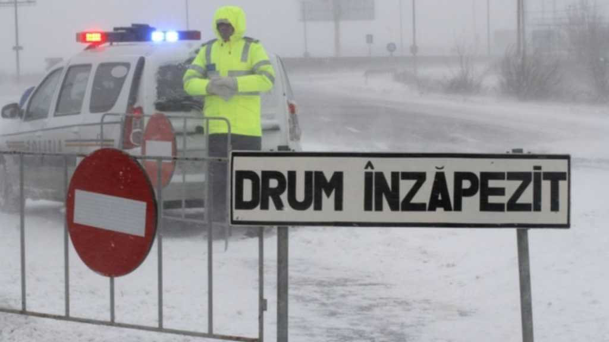

<!DOCTYPE html>
<html lang="en">
<head>
    <meta charset="UTF-8">
    <meta http-equiv="X-UA-Compatible" content="IE=edge">
    <meta name="viewport" content="width=device-width, initial-scale=1.0">

    <link rel="stylesheet" href="Style/scroll-bar.css">
    <link rel="stylesheet" href="Style/global.css">
    <link rel="stylesheet" href="Style/navbar.css">
    <link rel="stylesheet" href="Style/big-card-page.css">

    <link rel="preconnect" href="https://fonts.googleapis.com">
    <link rel="preconnect" href="https://fonts.gstatic.com" crossorigin>
    <link href="https://fonts.googleapis.com/css2?family=Poppins:ital,wght@0,100;0,200;0,300;0,400;0,500;0,600;0,700;0,800;0,900;1,100;1,200;1,300;1,400;1,500;1,600;1,700;1,800;1,900&display=swap" rel="stylesheet">

    <title>Document</title>
</head>
<body>
    <nav id="navbar" class="navbar"></nav>
    <main>
        
        <div id="advice-card" class="big-card card--gradient-move">
            <!-- <div class="big-card__image">
                
            </div>
            <div class="big-card__text">
                <p>
                    Pregateste-ti masina pentru iarna
                    Asigurati-va ca masina dumneavoastra are tot ce ii trebuie, ma refer in special la lichide, cum ar fi lichidul de frana si combustibilul. De preferat este ca atunci cand intentionati sa plecati la un drum lung sa aveti cel putin jumate combustibil in rezervor. Asigurati-va ca ati schimbat uleiul de motor cu cel indicat pentru iarna si ca toate celelalte fluide de la motorul masinii au fost completate.
                    Pregateste-ti masina pentru iarna
                    Asigurati-va ca masina dumneavoastra are tot ce ii trebuie, ma refer in special la lichide, cum ar fi lichidul de frana si combustibilul. De preferat este ca atunci cand intentionati sa plecati la un drum lung sa aveti cel putin jumate combustibil in rezervor. Asigurati-va ca ati schimbat uleiul de motor cu cel indicat pentru iarna si ca toate celelalte fluide de la motorul masinii au fost completate.
                    Pregateste-ti masina pentru iarna
                    Asigurati-va ca masina dumneavoastra are tot ce ii trebuie, ma refer in special la lichide, cum ar fi lichidul de frana si combustibilul. De preferat este ca atunci cand intentionati sa plecati la un drum lung sa aveti cel putin jumate combustibil in rezervor. Asigurati-va ca ati schimbat uleiul de motor cu cel indicat pentru iarna si ca toate celelalte fluide de la motorul masinii au fost completate.
                </p>
            </div>

            <div class="big-card__buttons">
                <a class="big-card__button " href="#">Înapoi</a>
                <a class="big-card__button " href="sfaturi.html">Sfaturi</a>
                <a class="big-card__button " href="#">Următorul</a>
            </div> -->
        </div>

    </main>

    <script src="scripts/nav.js"></script>
    <script src="scripts/sfat.js" type="module"></script>
</body>
</html>